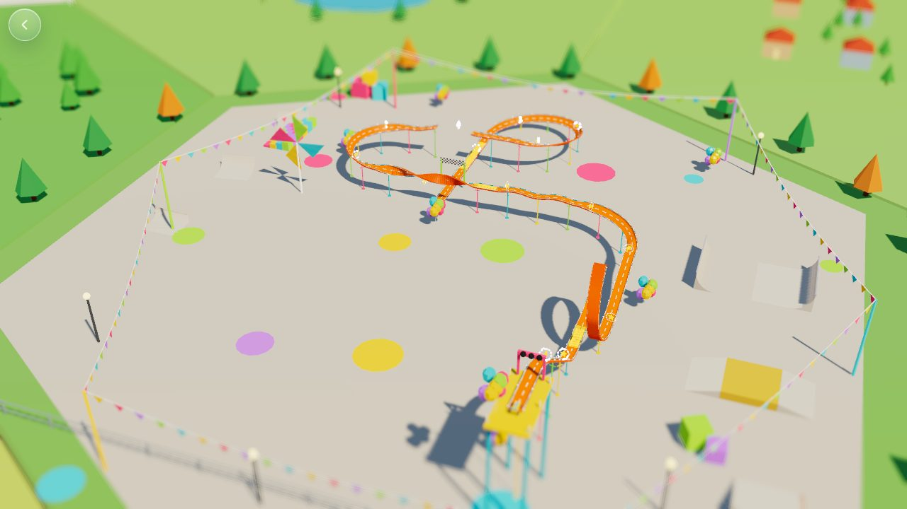
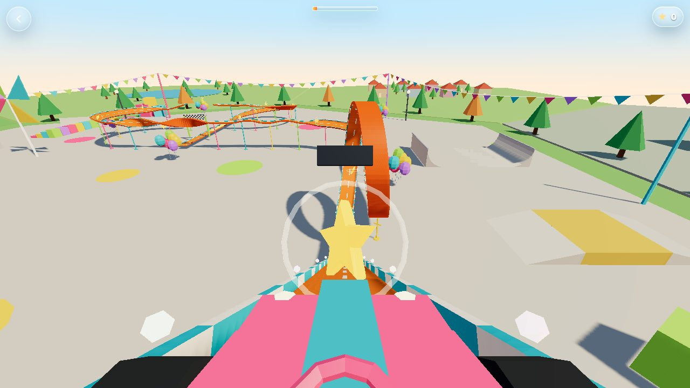
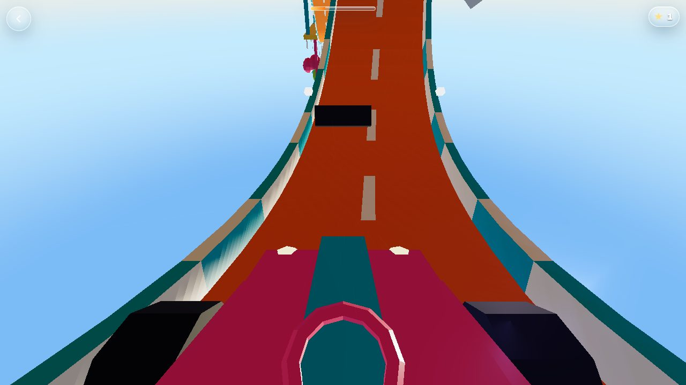
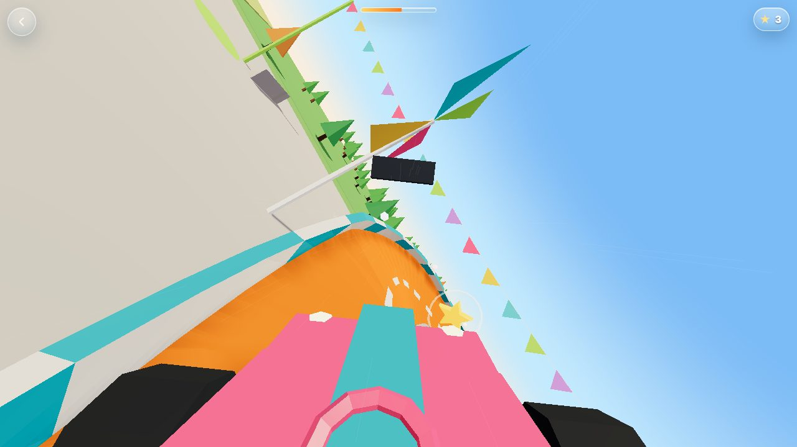
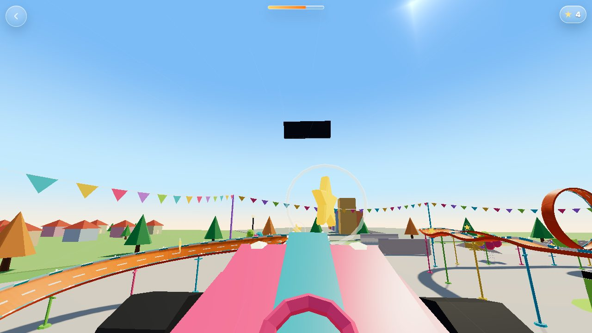
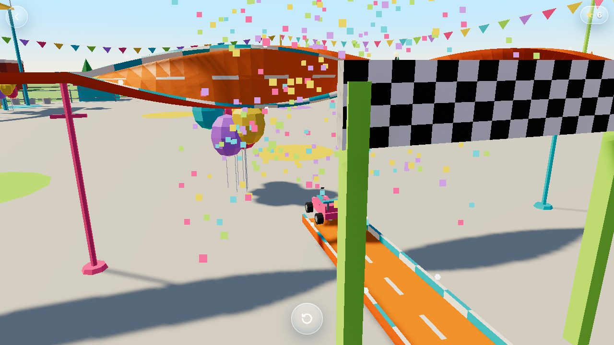

Evan, 2026-10-23, 5:04 PM: "at the skate park by the school there's a really cool hot wheels roller coaster. make a VR hot wheels ride (FPS view) super fun and decorated. 30 seconds in length. study first, but go all the way to low poly proof. flow down from tile view onto skate park, and then zoom into track ... tilt shift view, then you can interact with the roller coaster and get in a car." This is round one, playable.
1. Tile view. The skate park's hex glows. Tap the orb.

2. Flow down. Three seconds of camera, onto the skate park.3. Zoom into the track. Tilt-shift: sharp across the middle, soft above and below, so it reads as a toy. Drag to look, pinch to zoom, tap a paint bucket to repaint the car.

4. Get in. Tap the glowing car. The camera dives into the seat, the gate lamps count 3, 2, 1 and the blur melts away.
The ride: exactly 30 seconds
The track is a recipe (simulations/coaster-kit.mjs): a turtle that goes straight, turns, pitches and rolls. The ride's speed rolls downhill, kicks at boosters and brakes at the finish, then is stretched so the ride lasts exactly 30.0 seconds, however long the track is.

0:05 The loop. It drifts sideways as it rises, so the track clears itself.

0:15 The corkscrew. One full roll along a straight.

0:20 The jump. The track ends; the car flies the gap and lands on the far side.

0:30 Finish. Chequered arch, confetti, and the camera swings out to the car.
Time
Beat
Why it is there
0:00
Start gate on a tower, 3-2-1
A calm second before the drop
0:02
The drop, then the valley
Speed from height, so the first thrill is free
0:05
Booster pad, then the loop
The hero moment, early, with a star ring in it
0:09
Climb, banked left, three camelback hills
Breathing room and butterflies
0:14
Booster, then the corkscrew
The world turns over
0:17
Hairpin right, climb, the gap jump
Airtime with no track under you
0:22
Banked spiral down, last booster
Gravity, then the sprint to the finish
Steering is leaning. Hold anywhere and slide left or right (or use the arrow keys, or A and D) to lean the car across the track. Sixteen stars hover in three lanes; ten of them win the Toy car charm.
Decorated everywhere. String lights down both edges of the track, bunting over the whole park, balloon clusters, a pinwheel, giant toy blocks, cones, bleachers, a pit stall, and a chequered finish arch. Dense nearby detail is what makes a ride feel fast.
Abbie's charms come along. Whatever charms she has earned hang from the car's mirror and swing in the turns; they jingle on every star.
Design card: how the ride shows things
Diegetic: the countdown lamps on the start gate, boosters glowing with scrolling arrows, wind and wheel rumble.
Meta (feeling in your body): the field of view widens and the camera shakes with speed, speed lines streak past, the rumble drops away when you are airborne.
Overlay (precise only): a star count and one thin line for the 30 seconds. No words. Under 8% of the screen.
Presentation layer: the glowing park edge, the tap ring and the speed lines are marked as presentation, so the characters never see them.
Never masks the world: the tilt-shift blur is the camera's own focus on the zoomed-out miniature, and it is gone the moment you are in the car.
Concept sources, brand and licences
Brand. Hot Wheels is Mattel's trademark. This ride is inspired by the idea only: an orange-style track with loops and boosters, an original yellow buggy with a teal stripe. No toy brand's name, logo or car design appears anywhere.
Printables (Evan's source). The hotwheels tag page shows no licences, so every model there is reference only: none was downloaded or copied. When a model's page says CC0, or CC-BY with credit, it can be used in the public game; non-commercial and no-derivatives models stay reference. Everything here is built from primitives, so there is nothing to credit yet.
Room for borrowed concept art. Drop pictures into studies/coaster/img/concepts/ and the study can show them beside the matching in-game view. No Midjourney proofs were made this round.
Where it lives in Winchester
The coaster stands on the skate-park pad on Main Street beside the café (spot downtown.skatepark, scene skate-park). simulations/coaster-town.mjs builds the same track recipe as a small model on the pad, centred along its long side, with the yellow car on the start line and its booster arrows scrolling. Tap it in the town: the camera flies down onto the skate park, the light flashes and the ride opens already zoomed in (?skip=tile), with a low establishing shot rising to the miniature view. The back button returns you to the same spot in town (/town?at=town:skate-park). The ride is registered as town:skate-park in simulations/abbietown/entrances.mjs. Tour: yes. It goes into the player tour as a playful stop at the skate park.
How it was made, and how to be faster next time
Timeline (local time, UTC-4): 5:04 PM Evan's words. 5:10 PM canon read and the hex thread asked for a skate-park spot. 5:30 PM track recipe tuned in numbers. 5:45 PM first full playable. 5:55 PM this page. Live: after the next deploy batch.
Where the time went: the track recipe (about 25 minutes: a loop that came back to where it started, a track that dived underground, a spiral that climbed). The look took one screenshot round: fog washed out the tile view, the car's hood and windshield filled the first-person view.
Speedup 1, numbers before pictures. A ten-line Node script prints the track's height and closest approach at each segment; it caught the underground dive and the self-crossing loop in seconds, before any rendering. Keep it, and run it first on the next ride.
Speedup 2, a first-person checklist in the kit. The three first-person bugs (glass and frame on your nose, hood too tall, mirror too close) will happen on every cockpit. makeCar should carry an inCar(on) switch and the eye position, tested once.
Speedup 3, ask the Oracle first. Cloud threads cannot reach it, so no rail-ride or coaster study fed this round. Get the Oracle to write one into the repo ahead of the next ride game.
Speedup 4, concept art before the build. A Midjourney proof of the car and the track pieces would let the next ride match a picture, as the rules ask. Start it in parallel with the recipe.
Reusable now:coaster-kit.mjs (track recipe, car, tilt-shift pass), the headless flow test tools/minigame-test/coaster-flow.cjs. Next time a new ride is a new recipe, not new code.
Round 2 (Evan, 6:03 PM: "not even close to done")
In Winchester. The coaster model stands on the real skate-park pad; tapping it flies you into the ride and back.
A garage of six original toy cars on a painted stage at the foot of the start tower: Sunny Buggy, Comet, Shark, Rocket Wagon, Shopping Cart and Monster Mini (simulations/coaster-cars.mjs). Tap one and it hops onto the start line; tap it again to get in. Your pick and paint are remembered. All are our own designs: no brand, logo or real car.
Music and sound.simulations/coaster-audio.mjs: our theme (the Music Bible's hook in D, 3+3+2) played live, building from the garage to the ride to a cadence at the finish; wind, rumble and click-clack follow your speed; the sound store's whooshes, countdown, ratchet, landing thump, pops, keys, fireworks and crowd.
Cinematic look. A low late-afternoon sun with long shadows, a warm sky, bloom, a warm grade, a vignette and letterbox bars that slide in only for the cinematic beats (the fly-down, the get-in, the slow motion and the finish).
Slow motion. A tennis ball comes out of nowhere and passes a hand's width from your helmet: time drops to a seventh, the music goes muffled under a heartbeat, the bars come in. The jump goes to a third speed while a photographer in the bleachers takes your picture. A frisbee and a paper plane fly past too.
On-ride photo. At the end the photo drops in like a print: Abbie in her helmet and backpack, flying the gap in the car you chose, with your star count.
Next
Redraw the loop as a clothoid so the force on the rider eases in and out (see the context card).
Concept art pass, then hi-fi low-poly track pieces from a picture.
Sit the town model's start tower clear of the quarter-pipes.
Add the Toy car to the charms map page and the jewellery box art.